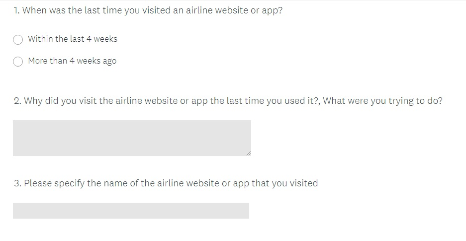

Usability Desktop Test 1
Subject 1 - Aerlingus & Ryanair websites
UX DESIGN PORTFOLIO
The projects shown below were completed to obtain my Professional
Diploma in UX Design
awarded by the Glasgow Caledonian University and run by the UX Design Institute.
Tools used during the course included Sketch, Adobe Illustrator & Photoshop.
Course Assignment: Conduct research on existing flight booking websites
and use the findings to design
a user-friendly flight booking desktop website.
Phase 1: Research
Usability Testing, Depth Interviews, Competitor Analysis, Online Survey
Usability Testing:
The first assignment undertaken was to conduct two usability tests to obtain some qualitative data about the usability of existing airline websites. I began by defining my research objectives to determine what I wanted to achieve from the tests. I created a recruitment screener, a consent form and a test script to use during the desktop usability tests.The test script was designed ensuring not to use leading or closed questions as these would impact the quality of the data obtained. I conducted two desktop usability tests using two different test subjects on the Aer Lingus and Ryanair websites.
Test Objectives:
Usability Testing Screenshots:
Usability Desktop Test 1
Subject 1 - Aerlingus & Ryanair websites

Usability Desktop Test 2
Subject 2 - Aerlingus & Ryanair websites
Depth Interview:
The next step was to prepare a script for a depth interview for the purpose of gaining some additional insights. I wanted to learn more about the context of use of people that use airline websites what are they trying to do, who are they with, where are they and what devices they are using.
Competitor Analysis:
I reviewed four websites to identify what best in class competitor websites were currently doing well. I wanted to gain more insight into how these websites were solving problems that users face when booking flights, understand current conventions that should be followed and highlight best practice being used.


Online Survey:
I created an online survey using Survey Monkey to gather more qualitative and quantitative attitudinal research to gain more understanding into context of use. I used a mixture of open and closed questions as well as some multiple choice questions. In keeping with good practice the survey contained no more than 10 questions and would take around 2-3 minutes for people to complete.
Phase 2: Analysis & Planning
Affinity Diagram, Customer Journey Map, Insights
Affinity Diagram:
I reviewed the usability tests and recorded notes on the test sessions. I then wrote down every important point that was mentioned onto separate post-it notes. The depth interview, competitor analysis and data gathered from the online survey was also reviewed and post-it notes were developed from this research also. The notes were then stuck on to a whiteboard and organised into categories. These categories were used to create the affinity map as shown below.